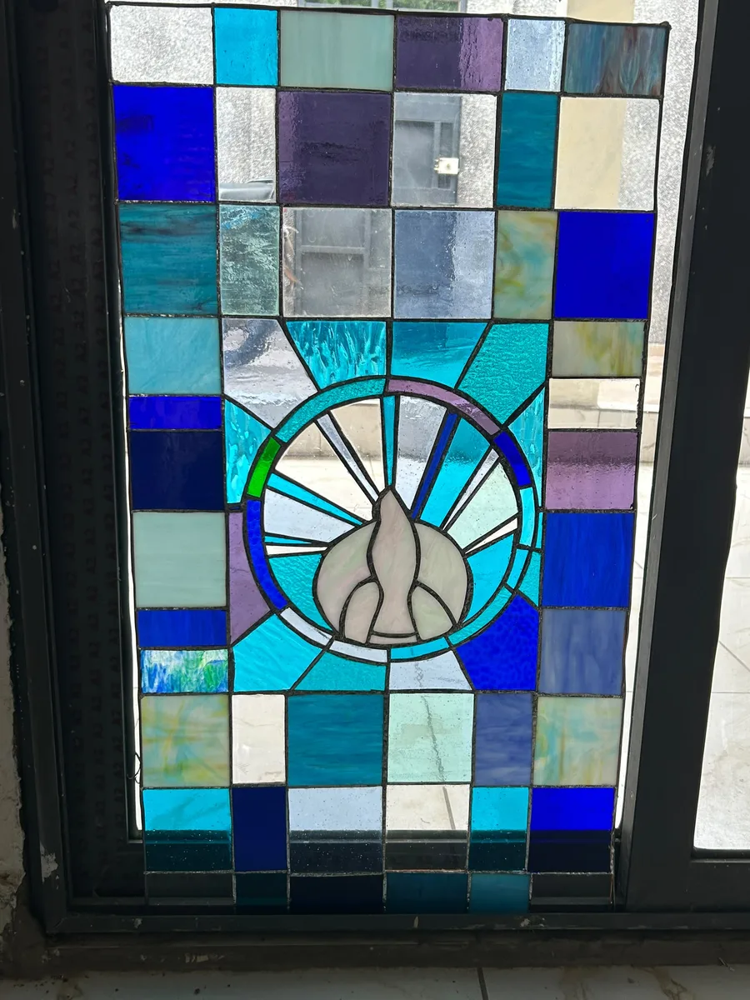
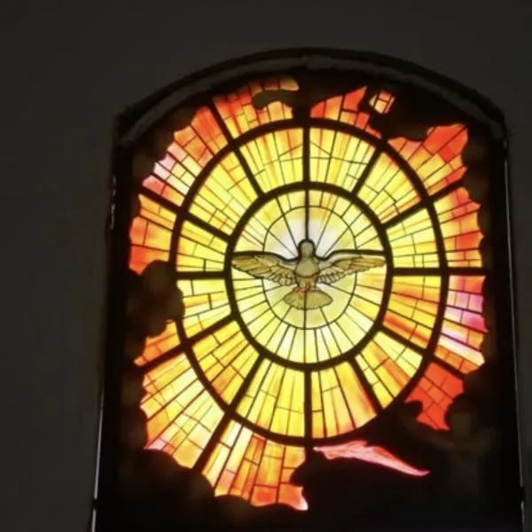
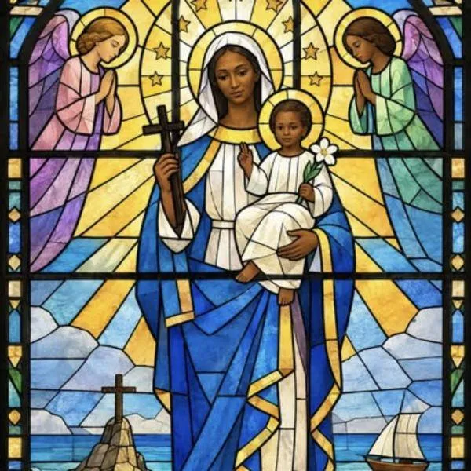
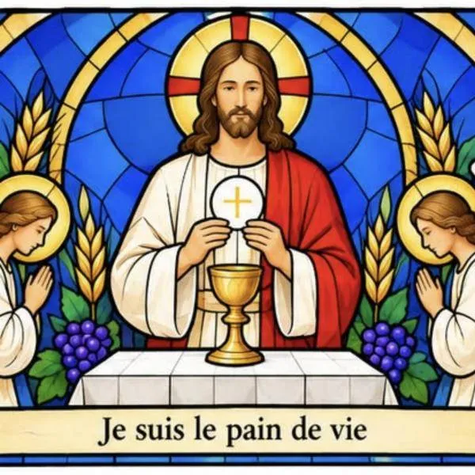
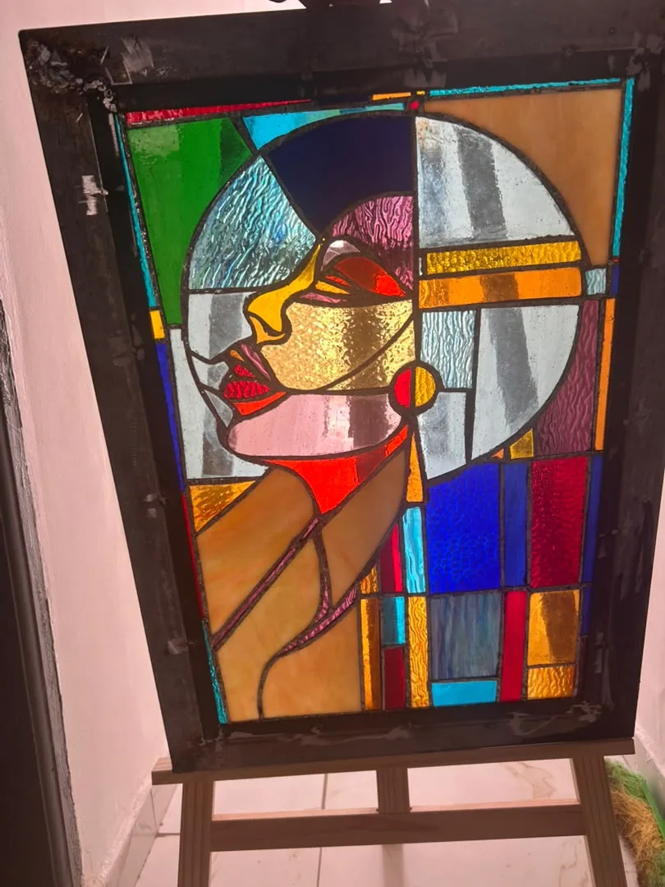
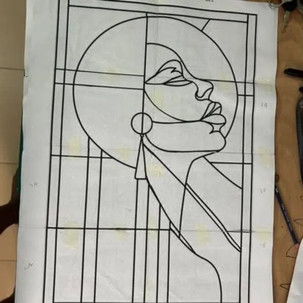
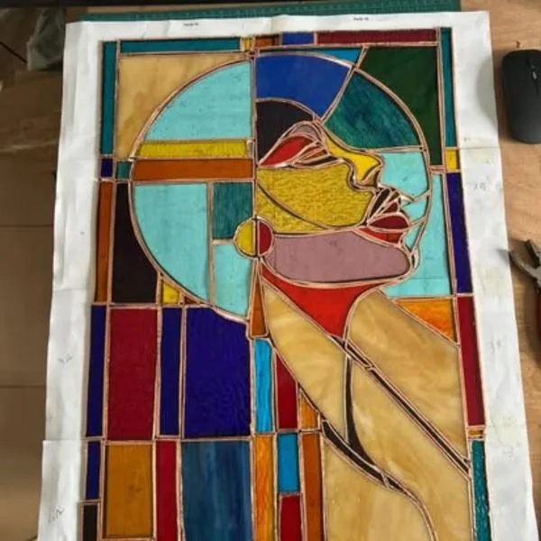
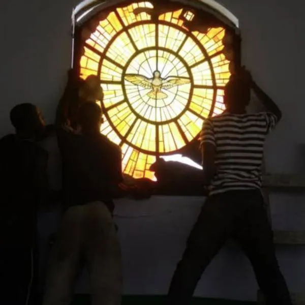
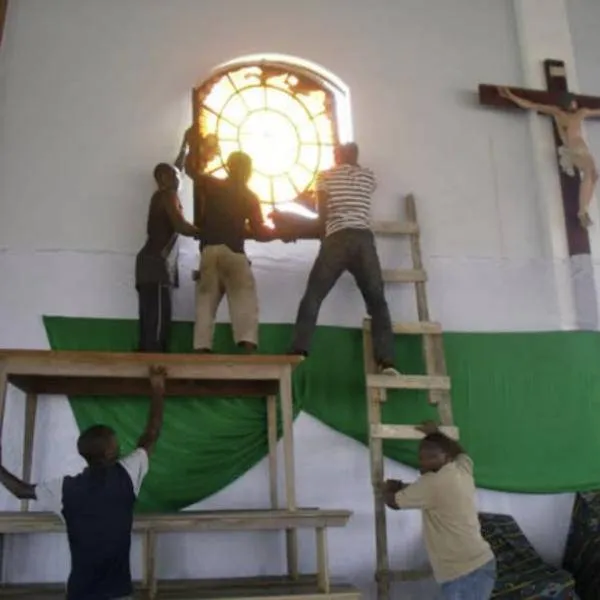
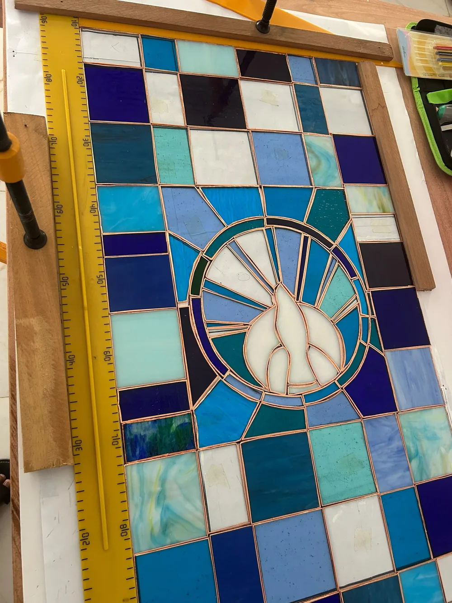

Réalisation
Colombe de l'Esprit Saint
La colombe au cœur d'un soleil, entourée d'un damier de verres bleus, turquoise et violets.
L'art du vitrail en Côte d'Ivoire
Nous créons des vitraux uniques pour les églises, les résidences, les hôtels et les espaces professionnels. Chaque pièce est dessinée pour son ouverture, fabriquée à l'atelier et posée par notre équipe.
Le vitrail à l'atelier depuis 2008

Services
Nous accompagnons paroisses, familles et entreprises sur toutes les étapes d'un vitrail.
Vitraux sur mesure, au plomb ou au ruban de cuivre, à partir de vos images ou de nos dessins.
Remise en état de vitraux anciens : pièces cassées, plombs fatigués, cadres à reprendre.
Fabrication des cadres et pose sur place, partout en Côte d'Ivoire.
Choix du thème, des couleurs et du niveau de détail selon votre lieu et votre budget.
Initiation et ateliers pour apprendre les gestes du vitrail.
Créations
Des réalisations de l'atelier et des maquettes proposées à nos clients.

Réalisation
La colombe au cœur d'un soleil, entourée d'un damier de verres bleus, turquoise et violets.

Maquette
Proposition pour une paroisse : manteau bleu, anges en prière et ciel d'or.

Maquette
« Je suis le pain de vie » : le Christ, le calice, le blé et la vigne pour un chœur ou une chapelle.

Réalisation
Un profil de femme en verres texturés pour une maison. Le vitrail entre aussi dans les intérieurs d'aujourd'hui.
Présentation
Du premier dessin au vitrail traversé par la lumière : voici comment naît chaque création. Appuyez sur lecture pour écouter la présentation.
Fabrication
Un même vitrail, suivi à l'atelier du dessin à l'échelle jusqu'à l'assemblage des verres.


En vidéo
Une fois les verres bordés de cuivre, chaque joint est soudé à l'étain au fer à souder. C'est ce qui donne au vitrail sa solidité et ses lignes argentées.
Démarche
Vous nous envoyez photos et dimensions, ou nous venons mesurer sur place.
Nous échangeons sur le thème, les couleurs et vos images de référence.
Vous recevez une maquette par vitrail et un devis selon le niveau de détail choisi.
Coupe du verre, sertissage et cadres sur mesure à l'atelier.
Installation par notre équipe et vérification finale avec vous.


Devis
Pour chaque vitrail, nous proposons trois versions. Vous choisissez celle qui correspond à votre budget et à vos délais.
Une image lisible et stylisée, avec de grandes pièces de verre. La solution la plus rapide.
Plus de pièces, des visages et des drapés travaillés. Le meilleur équilibre entre rendu et coût.
Le niveau d'une œuvre majeure : finesse des figures, nuances de verre et temps de travail important.
Les verres de qualité vitrail sont en grande partie importés en Côte d'Ivoire. Nos prix tiennent compte de ce coût réel pour garantir des vitraux qui durent.

L'atelier
Lumières d'Ivoire est né d'une passion pour le verre et la lumière, pratiquée depuis 2008. En 2012, l'atelier réalise ses premiers vitraux pour des clients, dont une colombe de l'Esprit Saint pour une paroisse de Yopougon.
Aujourd'hui, nous accompagnons des paroisses en construction comme des particuliers, avec la même exigence : un dessin juste, des couleurs vivantes et une pose soignée.
Contact
Envoyez-nous une photo de l'ouverture et ses dimensions. Nous vous répondons avec une première idée.